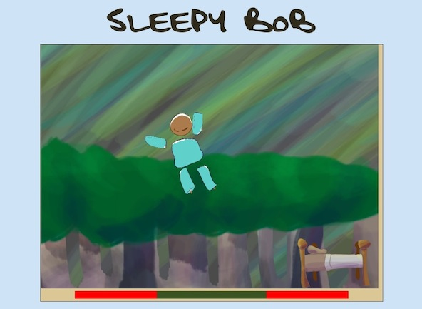

Projects
-
Sleepy Bob: Cornell Google Game Jam
DEMO
Sleepy Bob is a parallax sidescrolling game with dreamy graphics and ragdoll physics.
Bob is sleepwalking and he needs your help! The goal is to navigate him to the bed without waking him up. Bob starts waking up if you shake him too much, or if he hits the objects around him.
Built in less than 24 hours, Sleepy Bob utilizes Box2D.js and jQuery, and was originally deployed using Flask for python.
Sleepy Bob is the 2013 winner of the Cornell Google Game Jam!
-
Poem Generator
-
Sounds of the Streets
-
StuyDash
StuyDash is a dashboard web application with everything a Stuyvesant student needs to know about his day. From the bell schedule widget to the weather, StuyDash knows it all.
StuyDash works by screen-scraping the confusing and unappealing Stuyvesant website and displaying the useful stuff in an intuitive way. StuyDash interperets the weekly schedule and intelligently displays the right bell schedule, for a quick and easy view of what period it is at the moment. It also incorporates recent school news and the current weather. On top of this, StuyDash features links to the most necessary and useful outside websites for quick access to even more information.
StuyDash uses Flask for a python backend, and is made beautiful with jQuery animations and CSS.